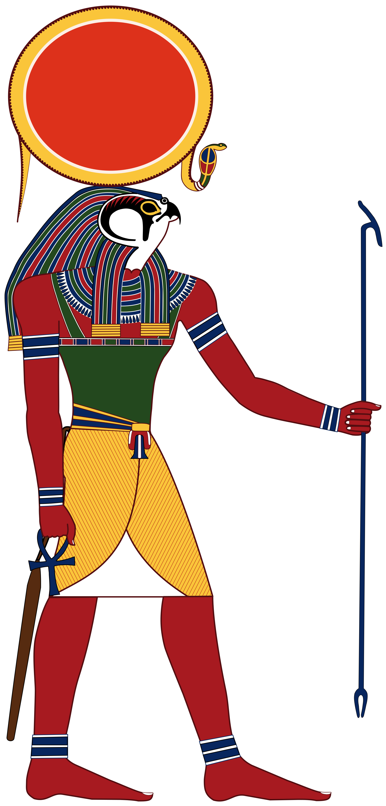
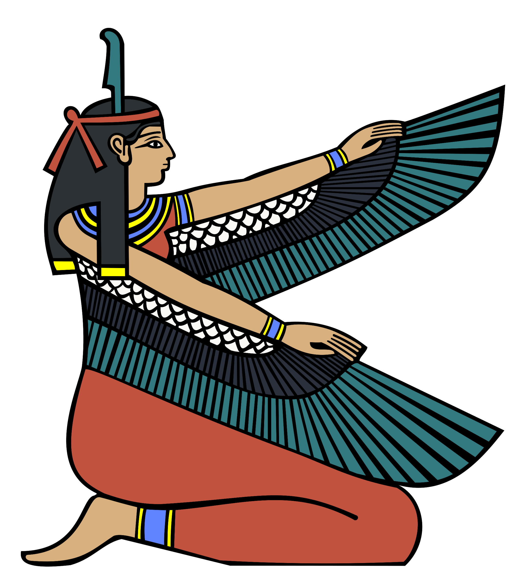
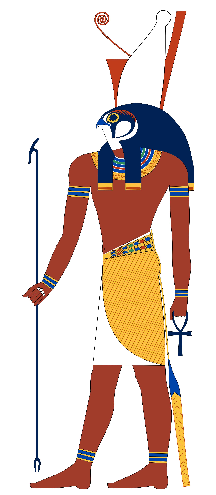
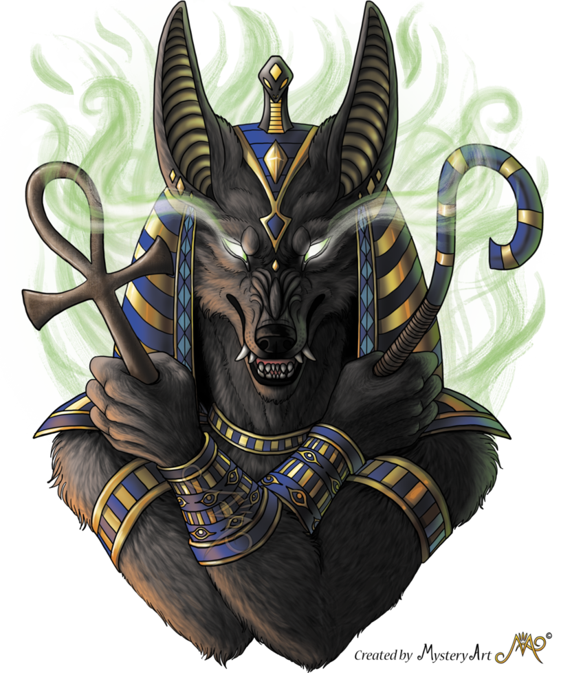
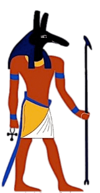

Dioses egipcios
Ra, el dios del sol

Es el dios del sol y una de las deidades más conocidas en nuestros tiempos, aunque antes del 2.400 AC solo fuera una deidad solar menor. Sin embargo, a partir de la dinastía V fue convertido en una dios mayor y en el principal protector de los faraones.
Representado como un hombre con cabeza de halcón, era el responsable de dar la vida a todo debido a su vinculación con el sol, razón por la que el dios Amón, uno de los más importantes de la mitología egipcia, acabaría fusionándose con Ra para convertirse en el gran Amón-Ra.
volver al indice
Osiris,dios de la resurrección
Osiris es uno de los principales y más importantes dioses de los egipcios. Según decisión de su padre, esta deidad debía heredar el reino de la parte fértil de Egipto mientras que su hermano Seth reinaría en la parte seca, pero este último no soportó los celos y la envidia que esto le causaba y decidió matarlo, cortando su cuerpo en 14 trozos que esparció por el mundo. La hermana de ambos, Isis, que luego se convertiría en la esposa de Osiris, se encargó de reunir todos los trozos que encontró embalsamándolo para hacerlo resucitar nuevamente. Se trata del primer indicio de momificación en esta cultura.
Se creía que una vez al año Osiris moría y resucitaba, por lo que es la deidad de la resurrección y de los muertos. Debido a que se le atribuía la responsabilidad de las crecidas del Nilo, es también un dios muy vinculado a la fertilidad y la agricultura.
volver al indice

Isis, diosa de la vida
Hermana y esposa de Osiris, es la diosa más importante para los egipcios, la madre de todos los dioses y la dadora de vida.
Se le consideraba la deidad de la maternidad y los nacimientos pues fue la encargada de dar vida nuevamente a Osiris después de que Seth lo descuartizara.
volver al indice

Horus, dios del cielo
Representado con cabeza de halcón y doblemente coronado, Horus era el dios del cielo, el hijo de Isis y Osiris quien tuvo que ser escondido por su madre pues su tío Seth también quería matarlo para impedir que heredara el trono.
Se le considera como el elevado, quien lucha contra Seth para vengar lo que hizo con su padre, consiguiendo finalmente matarlo y convertirse en el dios del mundo de los vivos mientras su padre gobernaba el mundo de los muertos.
volver al indice

Anubis, dios de las momificaciones
Representado tanto como hombre con cabeza de chacal como por un chacal, es el sobrino de Osiris y uno de los primero dioses del más allá, siendo conocido como "el señor de la necrópolis". Es el encargado de presidir los rituales de momificación
y también de acompañar el cuerpo del difunto al más allá, guiándolo hasta su camino final.
volver al indice

Seth, dios de las tinieblas
Seth fue la personificación del mal y la destrucción en la mitología egipcia,
esto principalmente por su decisión de matar y descuartizar a su hermano. Su cabeza de extraño animal reforzaba la creencia de que era un Dios oscuro, sin embargo también fue la deidad del desierto pues a él le correspondió reinar en la parte seca de Egipto.
Durante un breve período de la historia del antiguo Egipto fue considerado como un protector de las caravanas en el desierto, sin embargo mayoritariamente fue visto como el dios de las tinieblas.
volver al indice
